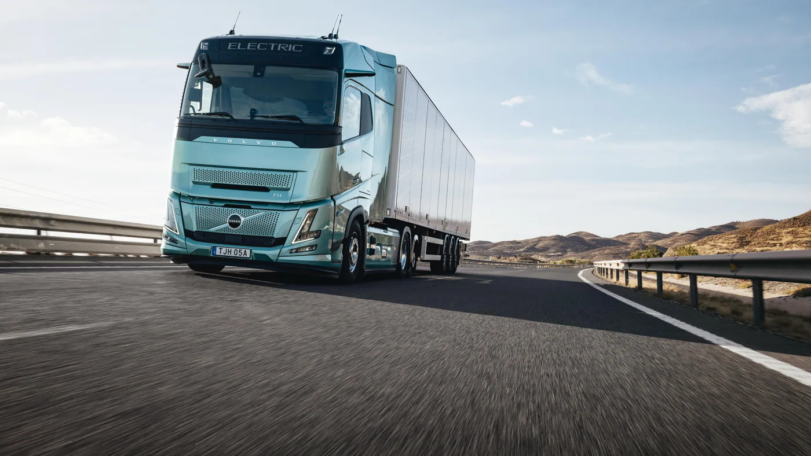

Volvo Trucks publicó el 1 de septiembre de 2026 una nueva comunicación sobre su participación en IAA Transportation. En ella confirma el foco en hidrógeno, electrificación y combustibles alternativos, con presencia de un camión de pila de combustible, otro con motor de combustión alimentado con hidrógeno, el FH Aero Electric de autonomía extendida y unidades a gas.
La presentación para la prensa está prevista para el 14 de septiembre en Hannover. Es una actualización de la agenda de exhibición, no una confirmación de disponibilidad en Argentina. El programa general ya había sido anticipado en julio; por eso no corresponde presentar todas las tecnologías como inventadas o lanzadas esta semana.
Hidrógeno no significa una sola mecánica
Hay que distinguir dos caminos. En una pila de combustible, el hidrógeno se utiliza para generar electricidad y el movimiento depende de un sistema de tracción eléctrico. En un motor de combustión, el combustible se quema dentro de los cilindros. Compartir el nombre del combustible no vuelve equivalentes sus componentes, mantenimiento o comportamiento.
Volvo incluye ambas alternativas en su comunicación. Su anuncio general de julio también anticipaba pruebas de un camión de combustión de hidrógeno y situaba su lanzamiento previsto antes de 2030. Esa previsión no es una fecha de venta local ni asegura que todas las versiones estén disponibles al mismo tiempo.
Qué preguntar antes de comparar autonomías
Análisis de Zabala Repuestos. Para un transportista, comparar tecnologías exige definir primero el trabajo. Distancia, peso, pendientes, tiempos detenidos y temperatura deben formar parte del caso de uso. Sin esa base, dos cifras de autonomía pueden describir operaciones completamente diferentes.
También importa cómo termina la jornada. Un vehículo que regresa a una base propia tiene una organización distinta de otro que encadena viajes sin destino fijo. La pregunta no es solamente cuánto puede recorrer, sino dónde recupera energía, cuánto tarda y qué alternativa tiene cuando el punto previsto no está disponible.

El abastecimiento forma parte del vehículo
Al analizar una unidad a batería, conviene incorporar el cargador y la conexión eléctrica al proyecto. Para una alternativa a hidrógeno, hay que verificar suministro, condiciones de almacenamiento y compatibilidad del abastecimiento. No basta con que un combustible exista en el país: debe estar disponible para la ruta, el horario y la especificación de esa flota.
Un cálculo útil separa inversión inicial, energía, mantenimiento y tiempo de inmovilización. También debe contemplar contingencias. Si la operación depende de una única instalación, una parada de esa instalación puede afectar varios camiones a la vez. La redundancia logística merece tanta atención como la autonomía nominal.
Lo que una demostración puede y no puede mostrar
Una prueba corta permite observar ergonomía, respuesta, visibilidad y facilidad de uso. No reproduce necesariamente meses de servicio con carga variable, clima adverso o reparaciones imprevistas. Las ferias son valiosas para conocer productos y conversar con técnicos, pero no reemplazan un ensayo representativo de la aplicación.
Antes de adoptar una tecnología, la flota debería pedir qué variables se midieron y cuáles fueron estimadas. Si se anuncia menor consumo, interesa conocer el vehículo de referencia. Si se promete menor costo, conviene revisar qué tarifa energética, kilometraje y horizonte de tiempo utiliza la comparación.
Una agenda distinta para los talleres
La convivencia de varias motorizaciones vuelve más importante identificar exactamente la unidad. La capacitación y los procedimientos deben corresponder al sistema instalado. No es prudente trasladar una intervención de un motor conocido a otro combustible ni tratar todos los componentes eléctricos como si fueran circuitos convencionales.
Para organizar el servicio, es razonable preguntar por herramientas, documentación, repuestos críticos y personal habilitado antes de incorporar el camión. La facilidad para comprar una unidad y la capacidad para sostenerla durante años son dos evaluaciones diferentes.
Qué mirar desde Argentina
- Disponibilidad: exigir confirmación de versión, plazo y soporte local.
- Aplicación: comparar con la ruta y la carga reales de la empresa.
- Energía: verificar puntos, horarios y alternativas de abastecimiento.
- Servicio: conocer la cobertura y el procedimiento ante una inmovilización.
- Resultados: solicitar datos de pruebas comparables, no solo máximos publicitarios.
La novedad de septiembre es la confirmación del foco tecnológico y de la presentación próxima. El interés para Argentina está en seguir los resultados sin confundir una exhibición europea con una oferta local. Para elegir bien, la pregunta central seguirá siendo qué solución completa puede cumplir el trabajo con respaldo y costos verificables.